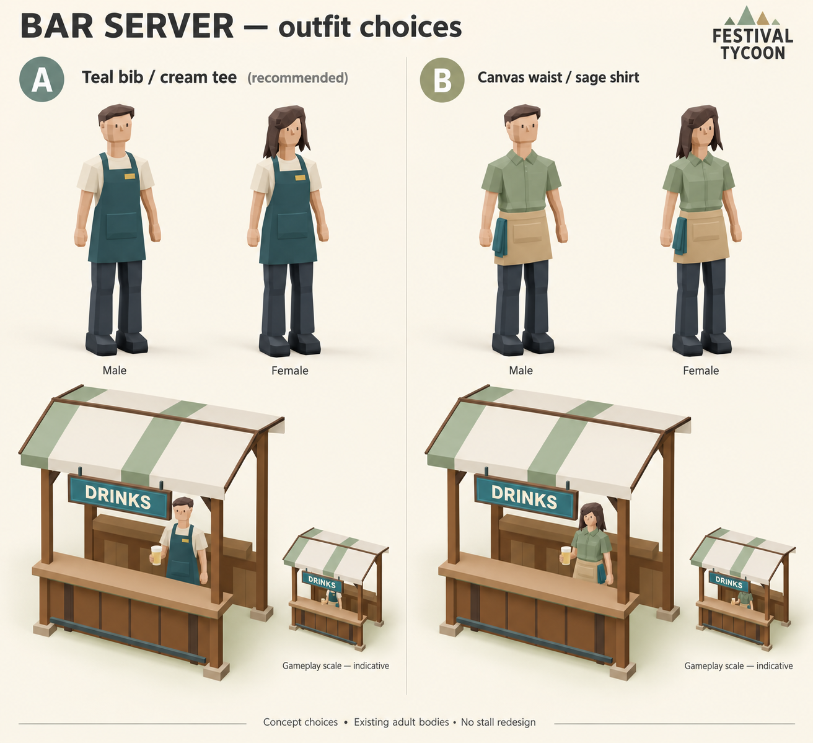
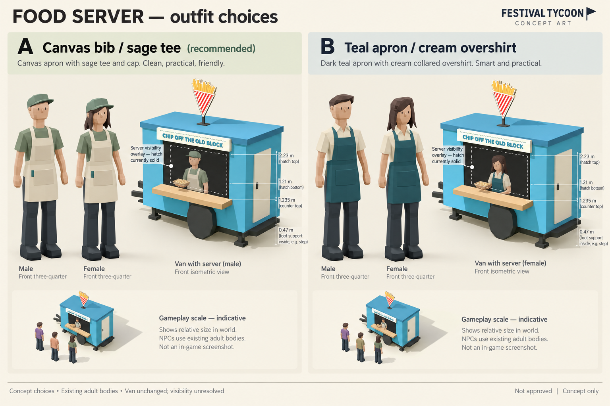
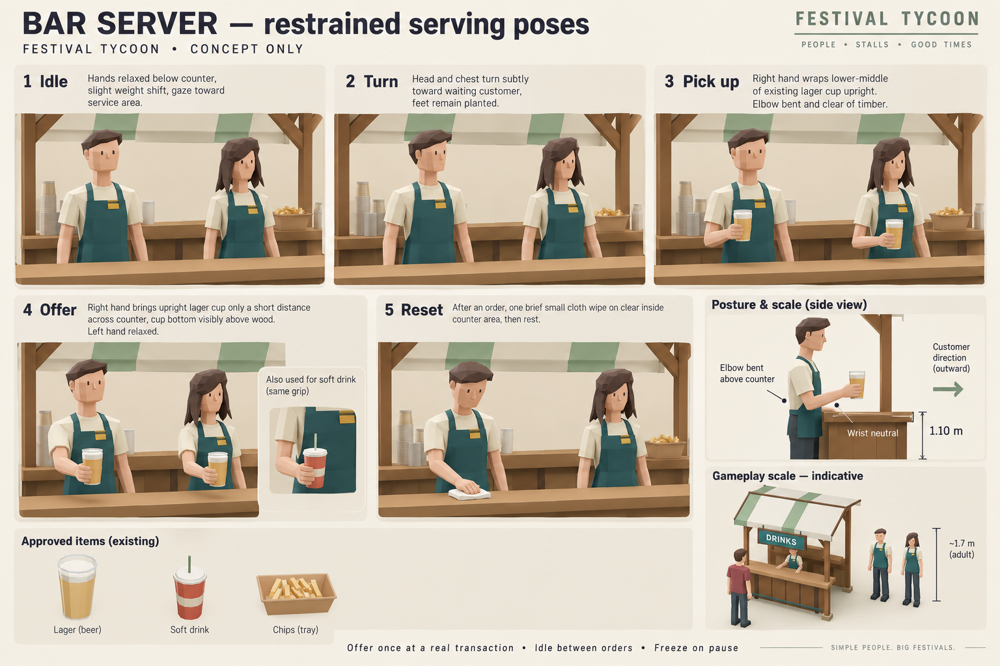
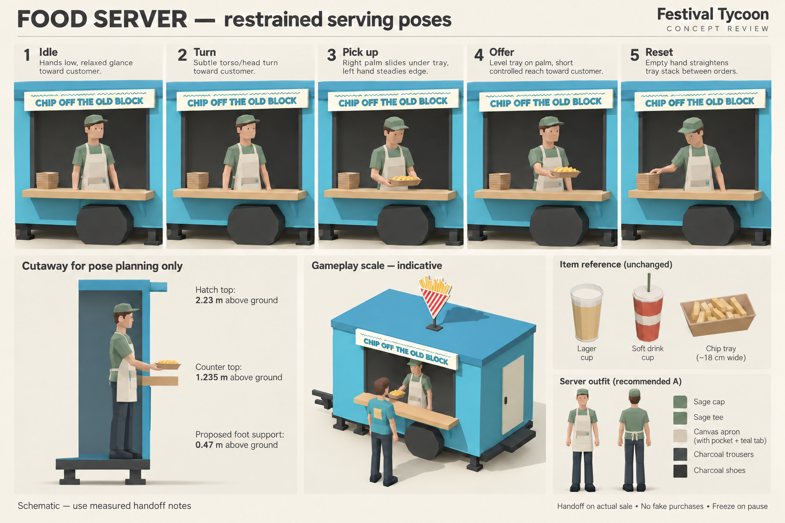

Choices for review, not approved. Recommended pair: bar A (teal bib / cream tee), food A (canvas bib / sage tee and cap).
Food server views are visibility overlays: the current van has a solid hatch panel and uncut front wall. No asset changes have been made. Drawings are schematic; measured dimensions and practical rig handoff take precedence.



